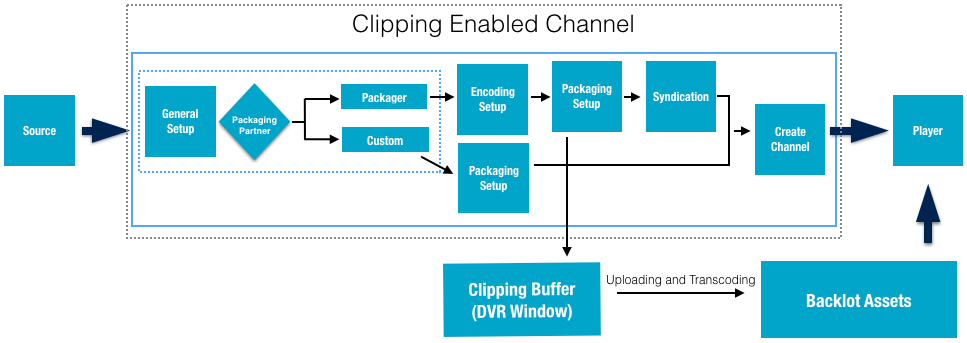
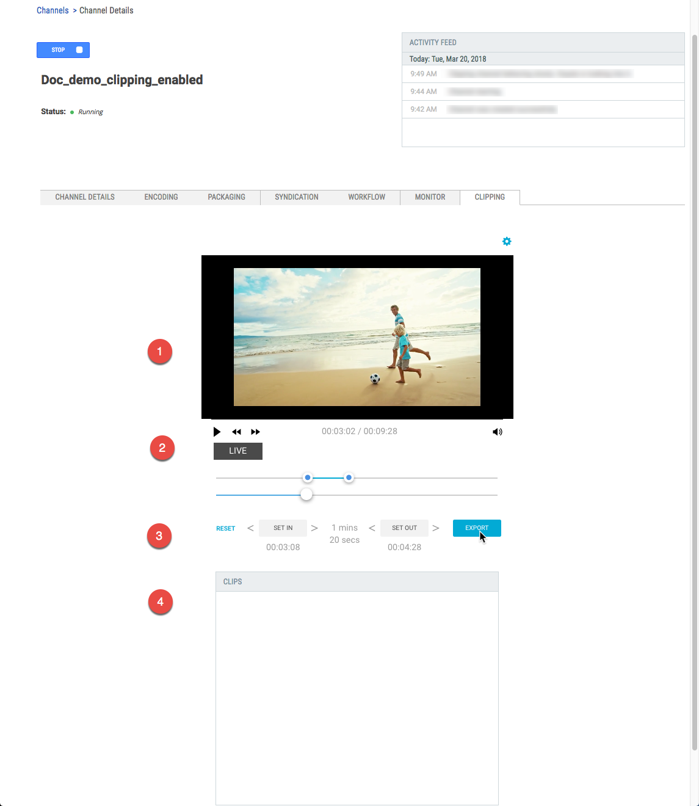

You can create short clips from a channel while it
is running, save them to Backlot. This is a great way to share highlights or teasers
from your live stream with viewers. To enable this feature for your account, please
contact your Ooyala Customer Success Manager.
Create a new channel that has clipping enabled and create the clips. The DVR Window
size determines the size of the clipping buffer.
Live Clipping
Workflow

-
You must add a channel that has been enabled for clipping.
Important: Clipping is a profile dependent feature. An Ooyala
representative must enable your Live profile for clipping before you will
see the Clipping option.
-
Log in to Live and make sure the Clipping enabled channel is running.
-
Go to the Clipping tab in the channel's details
view.
Understanding the Clipping Tab
Things to think about

-
Slick the segment you want to clip from the buffer.
-
Click EXPORT.
Tip: Clips are stored as assets in your Backlot account.